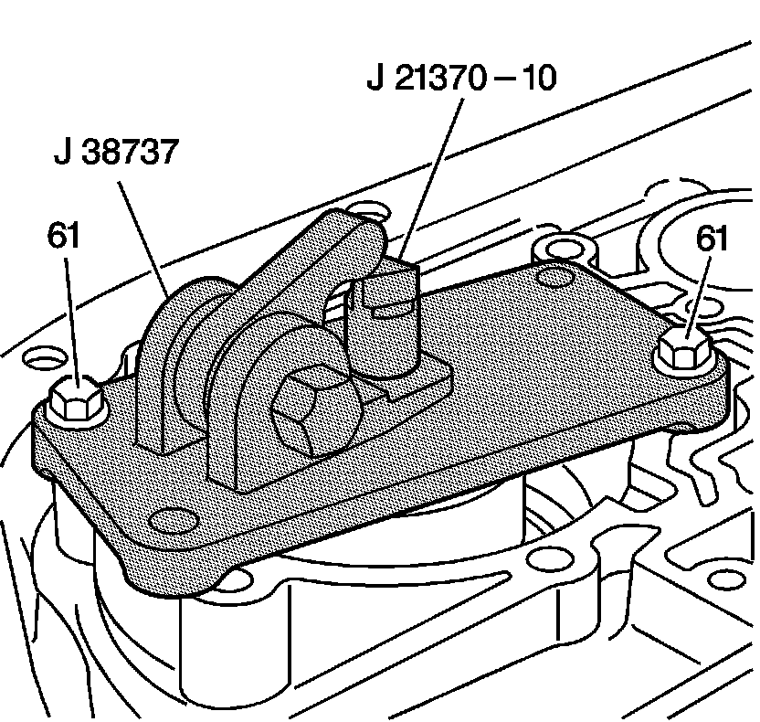

Low and Reverse Band Servo Apply Piston Pin Check
Low and Reverse Band Servo Apply Piston Pin Check
Tools Required
^ J 21370-10 Band Apply Pin Gage
^ J 38737 Band Apply Pin Checking Tool

1. Install the J 21370-10 into the low and reverse band servo pin bore.
2. Position the J 38737 over the low and reverse band servo bore with the hex hub facing the parking pawl linkage.
Notice: Refer to Fastener Notice.
3. Fasten the J 38737 to the case with 2 low and reverse band servo cover bolts (61).
Tighten the bolts to 24 N.m (18 lb ft).
4. Verify that the J 21370-10 moves freely in the J 38737 and in the low and reverse band servo pin bore.
Important: The hex hub of the J 38737 must be tightened in order to determine the correct low and reverse band servo piston pin length.
5. Tighten the hex hub of the J 38737.
Tighten the hex hub of the J 38737 to 34 N.m (25 lb ft).
6. Observe the lands on the J 21370-10 in order to determine which land is even with the top edge of the J 38737. Note the letter (A, B or C) stamped on the J 21370-10.
7. Refer to the Low and Reverse Band Servo Piston Pin Specification chart, in the Transmission General Specifications, in order to determine the correct pin length to use.
8. Remove the tools.